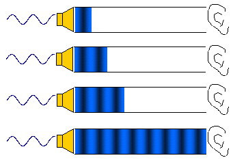
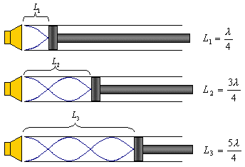
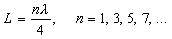
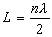

|
|

|
224 Physics Lab: Acoustic Resonance
|
223 & 224 Lab Overview |
Return to Physics 224 Labs
Purpose
The purpose of this lab experiment is to determine the relationship between
the speed, frequency and wavelength of sound waves by measuring
each of these properties.
Background
This laboratory experiment deals with acoustic resonance.
For a more detailed treatment of waves and their basic properties, please see
our standing wave experiment.
| Theory of Acoustic Resonance |
Sound waves are longitudinal waves which require a medium,
such as air or water, in which to travel. Sound does not travel in a vacuum.
The material properties of the medium
determine the speed with which the sound wave travels through that medium.
For example, the speed of sound in water is approximately
1500m/s and through a diamond the speed can reach 12,000m/s!
The theoretical speed of sound in dry air is given by the equation
where
is the temperature in °C, and the
speed of sound is given in m/s.
In this experiment, sound waves are created with the use of speaker connected
to a function generator. The function generator sends an oscillating
current signal to the speaker which causes the speaker's diaphragm to vibrate.
As the diaphragm moves outward, the air near the speaker is compressed, creating
a small volume at relatively high pressure, which propagates away from the speaker.
As the diaphragm moves inward, a low pressure area is created which also propagates
away from the speaker. This is shown in the topmost cartoon in Figure 1 with
the dark and light bands representing areas of high and low pressure, respectively.
| |
|

|
|
Figure 1. An alternating signal into a speaker creates sound waves
which propagate away from the speaker. Here the sound waves are
pumped into a resonance tube are confined to move in one direction.
The dark bands represent areas of high pressure, where the light
bands represent areas of relatively low pressure.
|
The process of compressions and rarefactions
continues with a frequency equivalent to the input signal.
The higher the input frequency, the more often the compression/rarefaction cycle
occurs each second. As the sound wave propagates away from the
speaker, they may be detected by a microphone or a human ear. When this happens
the cycle is reversed: the areas of high and low air pressure cause the
ear drum and the microphone's diaphragm to vibrate,
both of which create small electrical signals.
In the case of the microphone, the electrical signal can be recorded by a
recording device or
displayed on an oscilloscope.
In our experiment we will confine the sound waves to move in one direction with the
use of a resonance tube apparatus. Within the tube is a movable piston
which effectively closes off one end of the tube.
When a sound wave is produced
by the speaker located at one end of the tube, it will propagate along the tube's
volume until is hits the piston, where it is reflected back towards the speaker-end
of the tube. The piston can effectively alter the length of the
tube, causing the incident and reflected waves within the tube to interfere in
such a way as to maximize the amplitude of
the sound waves. When this occurs, the
standing waves created within the tube are said to be in resonance.
As shown in Figure 2, other
resonant modes may be detected by slowly varying the length of the tube
by moving the piston.
| |
|

|
|
Figure 2. By moving the piston, the resonant modes may be
detected. Note the relationship between the tube length and the
sound's wavelength is given by

|
To get a clearer understanding of what resonance is and how it is detected,
view this short video. If possible, use your computer speakers or a set
of head phones to listen for the resonance at the same time as you
watch the microphone signal displayed on the oscilloscope.
The movie is 3.42 Mb and lasts for only 15 seconds.
 View the movie.
View the movie.
|
If the resonance tube is closed at one end (as is the case with the tube in
Figure 2), the relationship between the tube length,
 ,
and the wavelength of the sound wave, ,
and the wavelength of the sound wave,
 ,
is given by the equation ,
is given by the equation
Notice that
is the positive odd integers.
|
(A comment needs to be made here about resonance tubes open at both ends. Due to
time constraints, we will not investigate standing waves in an open tube. However,
students are encouraged to investigate this phenomenon on their own. The first step
should be to read a text on the subject, for example, Serway and Beichner's
Physics for Scientists and Engineers (5th Edition), pages 559-561.
It should be noted that the relationship between an open tube's length and the
sound's wavelength is given by
 ,
where
is the positive integers 1, 2, 3, 4, ....)
|
Equation 2 does not accurately predict what actually occurs in nature.
Musicians and instrument makers have known for centuries that, due to the tube's
open end, an end correction must be made. It appears that when
the sound wave exits the tube's
open end, it is no longer constrained by the tube's walls. While this is true
far away from the tube, the change in the character of the medium
adjacent to the tube's end is significant, especially for large-diameter tubes.
The corrected equation is therefore given by
where
is the diameter of the tube. Again, this is for a tube closed at one end.
| |

[Click on image to enlarge it.]
|
|
Figure 3. The resonance tube apparatus.
|
The speaker is fed a sine wave
signal from the function generator, and the frequency of this sine wave
should be such that at least ten data points may be taken.
It is important that the signal is not
attenuated, inverted or swept. Also, make sure that the duty cycle and
dc offset are fixed (that is, not varied).
The oscilloscope
will be used to monitor both the input signal (from
the function generator) as well as the signal recorded by the microphone. To do this
efficiently, you should use both channels of the scope.
The microphone should be secured with the thumbscrew located under the speaker.
Be sure to turn the microphone on! Note that all microphones are sensitive to
pressure. Therefore, when the signal from the microphone reads a maximum,
this is actually a pressure antinode which corresponds to a node
of the sound wave.
Objectives
- Using graphical methods, determine the wavelength,
,
of the sound wave produced in the resonance tube, and
the diameter,
,
of the resonance tube.
- Using the oscilloscope, find the frequency,
 ,
of the sound wave. ,
of the sound wave.
- From your calculations of
and
,
determine the speed of the sound wave,
,
produced in the resonance tube.
- Using a vernier caliper and a thermometer determine
and
.
Compare these values with those found in Objectives 1 and 3.
Equipment and setup
- (Figure 4.) The resonance tube apparatus. This includes
a speaker, two tube supports, a piston and microphone.
- (Figure 5.) The microphone and cord.
Note the microphone is connected to an audio-to-BNC wire.
- (Figure 6.) A close-up of the microphone and its switch.
Note the microphone must be
turned on with the small switch.
- (Figure 7.) The speaker and microphone.
Note the microphone is secured with the thumbscrew under the
speaker.
- (Figure 8.) The function generator. The signal from the function generator is split
using a T-junction.
- (Figure 9.) The oscilloscope. One channel will be used
to monitor the input signal to the speaker
(from the function generator), and
the other channel will monitor the microphone.
- (Figure 10.) The signal from the function generator is carried to the speaker via a
BNC-to-banana cable and to channel 1 of the oscilloscope via a regular
BNC cable.
- (Figure 11.) Here is a display of the two oscilloscope channels.
One channel is the input signal to the speaker
and the other shows the sound waves detected by the microphone.
- (Figure 12.) Here is a close-up of the Heath
scope. Notice
the location of all the switches. All variable knobs should be off,
that is, "pushed in or clicked off".
- Glass thermometer
- Vernier caliper
|
[Click on images to enlarge.]
|
Hints and Cautions
- Caution!!! Handle all electronic devices with care, especially the
oscilloscopes. Do not jar the equipment.
- Caution!!! Be careful with the oscilloscope probes and microphone
wires, as both can be easily broken.
- When performing the experiment you should leave a gap of
~1cm between the speaker and end of the tube.
- Be courteous to other lab groups and to your TA -- keep the speaker
volume low. This will also yield better experimental results!
- Be sure to turn off the microphone when it is not in use. The battery
runs down quickly.
Online Assistance
- Our standing wave experiment
- Oscilloscope basics
- An online resonance
experiment -- a CUPOL project
- A CUPOL tutorial on using the
vernier caliper
- Clemson Physics Lab Tutorials
- Using Excel
Lab Report Template
Each lab group should
download the Lab Report Template
and fill in the relevant information
as you perform the experiment. Each person in the group
should print-out the Questions section and answer them individually.
Since each lab group will turn in an electronic copy of the lab report,
be sure to rename the lab report template file. The naming convention is as
follows:
[Table Number][Short Experiment Name].doc.
For example the group at lab
table #5 working on the Ideal Gas Law experiment would rename their template file
as "5 Gas Law.doc".
Questions
Each student should
download the questions.
Each person in the group
should print out the questions and answer them individually.
Discussing the questions as a group is acceptable, but each student is responsible
for turning in answers that represent their own work, not the work of others.
Nudge Questions
These Nudge Questions are to
be answered by your group and checked by your TA as you do the lab. They
should be answered in your lab notebook.
General Nudges
- How do you use an oscilloscope to measure voltages?
- How do you use an oscilloscope as a clock?
- How do you use an oscilloscope to measure the period of a ac signal?
- Can you get the oscilloscope to read a signal from the function generator?
- Can you get the oscilloscope to pickup your voice as detected from the
microphone?
Objective 1 Nudges
- How will you determine
and
?
- Is the resonance tube an open or closed tube?
- What parameters will you need to measure for this Objective?
- What quantities will you plot?
- What driving frequency and waveform did you decide
to use for the experiment? Can
be too high or too low?
- How do you know when resonance is achieved?
- How many resonance modes were you able to detect?
- How many measurements of
did you make?
- Do you expect your y-intercept to be positive or negative?
- What is the uncertainty in your measurements of
?
- What is the uncertainty in determining
?
- What is the uncertainty in determining
?
- What steps did you take to decrease the error in this experiment?
- Did you use both oscilloscope channels in this experiment?
Objective 2 Nudges
- How will you measure the frequency of the sound wave?
- What is the magnitude of one division (square) on the horizontal
axis on the oscilloscope? What is measured on this axis?
- What is the least count of a measurement on the horizontal axis?
- What steps did you take to reduce the error in your
measurement?
- What is the uncertainty of your
measurement?
- How does your measurement of
compare to the setting on the function generator?
Objective 3 Nudges
- How will you determine the speed of sound,
?
- What is the measured uncertainty in
?
For this you may need to find the maximum and minimum values.
Objective 4 Nudges
- What is the uncertainty in your direct measurement of
?
- Should you measure the inner or outer diameter of the tube? Which
value most closely agrees with your Objective 1 result? Is this
surprising?
- How will you use the temperature measurement to find the speed of sound?
- What is the uncertainty of your indirect measurement of
? How did you determine this?
- How can you decrease the error in your indirect measurement of
?
- How did your values of
compare?
TA Notes
- Have students obtain and replace their own function generators and
oscilloscopes.
Data, Results and Graphs
Answers to Questions
Lab Manual
CUPOL Experiments
See the CUPOL experiment on
Acoustic Resonance.
See the CUPOL tutorials on using a
oscilloscope
and
vernier caliper.
If you have a question or comment, send an e-mail to Lab Coordiantor:
Jerry Hester
223 & 224 Lab Overview |
Return to Physics 224 Labs
|
|